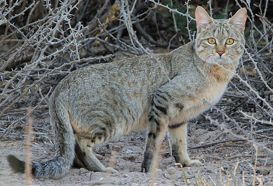

Вступ
Коти – теплокровні тварини з гнучким тілом, гострими кігтями та чудовим зором. Їхні очі можуть бачити в сутінках, а вуса допомагають точно оцінювати відстань до предметів. Вони мають чудовий слух і відчувають навіть високочастотні звуки, які людина не сприймає.

Походження
Домашня кішка походить від дикого африканського кота – Felis silvestris lybica. Співіснування з людьми почалося, коли кішки почали охороняти запаси зерна від гризунів. Згодом вони стали улюбленцями людей, а в деяких культурах навіть священними тваринами.

Поведінка
Кішки незалежні, але водночас прив’язані до людини. Вони спілкуються за допомогою звуків, положення тіла, хвоста і погляду. Муркотіння означає задоволення, спокій або довіру. Повільне кліпання очима вважається “котячим поцілунком”.
Породи
Існує понад сімдесят офіційно визнаних порід кішок.
Серед найвідоміших:
- Сіамська – розумна та балакуча.
- Британська короткошерста – спокійна і врівноважена, має густу шерсть.
- Мейн-кун – велика й доброзичлива порода з пухнастим хвостом.
- Сфінкс – безшерстий, лагідний і дуже любить тепло.
Догляд і харчування
Кішки є хижаками, тому основа їхнього раціону – м’ясо. Вони потребують білків тваринного походження, води та мінералів. Домашні кішки повинні мати чистий лоток, іграшки для активності, кігтеточку й регулярні відвідування ветеринара.
Цікаві факти
- Кішки сплять до 16 годин на добу.
- Серце кішки б’ється у два рази швидше, ніж у людини.
- Кішки бачать у темряві у шість разів краще, ніж люди.
- Вони можуть видавати понад сто різних звуків.
- Кішки мають унікальний відбиток носа – як у людей відбитки пальців.
- У Японії вважають, що чорна кішка приносить удачу, а не нещастя.
Завдання 3 варіанта
1. Оформлений текст
E=mc2, where E - energy of the object,
m - it's mass, c - speed of light in
vacuum, equals to 299 792 458 m/s
2. Список
3. Таблиця
Зміст книги "451° за Фаренгейтом:"
| Розділ | Сторінка |
|---|---|
| Передмова | 3 |
| Частина перша – Вогонь і Саламанандра | 7 |
| Частина друга – Сито і пісок | 73 |
| Частина третя – Вогонь горить яскраво | 129 |
| Післямова автора | 178 |
4. Форма з керуючими елементами
5. Посилання та зображення
Відносне гіперпосилання, що веде до необхідного розділу іншої сторінки:
Перейти до розділу “Смішні коти” на іншій сторінці: Смішні коти